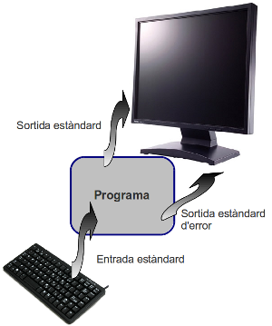

Entrada/Sortida
En una primera aproximació, les instruccions d’entrada recullen un valor des d’un dispositiu d’entrada (ex. teclat) i l’assignen a una variable.
Per la seva banda, les instruccions de sortida dipositen el resultat d’una expressió a un dispositiu de sortida (ex. pantalla).
Quan llencem un programa per ser executat, el sistema operatiu li obre automàticament tres canals (o fitxers) anomenats entrada estàndard, sortida estàndard i sortida estàndard d'error. A menys que es faci res especial, el fitxer d'entrada queda connectat al teclat, mentre que els dos canals de sortida queden connectats a la pantalla.
De moment no en farem gaire cas de la sortida estàndard d'error.
Entrada
Per llegir de l'entrada estàndard farem:
>>> text = input()
input() és el que s'anomena una funció. Ja n'hem vist alguna (ex.
type()). Anirem veient moltes de funcions a mida que avancem en la
programació.
És important tenir clar que el resultat de input() és sempre de tipus text o
string. De vegades ens pot interessar que sigui un número, per exemple, per
sumar-li un valor. Fixa't en la següent interacció:
>>> edat = input()
18
>>> edat
'18'
>>> type(edat) # edat no és un numèric
<class 'str'>
>>> edat_mes_u = edat + 1 # intentem sumar-li 1 al valor d'edat
Traceback (most recent call last):
File "<stdin>", line 1, in <module>
TypeError: Can't convert 'int' object to str implicitly
>>> edat_enter = int(edat) # convertim edat a enter amb int()
>>> type(edat_enter)
<class 'int'>
>>> edat_mes_u = edat_enter + 1 # ara sí que podem sumar 1
>>> edat_mes_u
19
Sortida
Per escriure, simplement farem:
1>>> print('Hello world!')
2>>> print('Tinc', edat_enter, 'anys')
3>>> print('Tindré', edat_enter + 1, 'anys')
4>>> print('He tingut ' + str(edat_enter - 1) + ' anys')
Fixa't que cada cop que fem executar print() ens mostra el contingut
que hi ha entre parèntesis i ens finalitza amb un salt de línia.
Per exemple, considera el programa següent:
print('Tinc')
print(edat_enter)
print('anys')
En executar-ho, obtindrem:
Tinc
18
anys
En cas que vulguem que aquestes tres sentències es mostrin a la mateixa
línia, ens caldrà indicar-ho a print() de la següent manera:
print('Tinc', end=' ')
print(edat_enter, end=' ')
print('anys')
En executar-ho, obtindrem:
Tinc 18 anys
Fixat que end=' ' té un espai entre les cometes. Hi podríem posar
qualsevol altre text, per exemple:
print('Tinc', end='<')
print(edat_enter, end='>')
print('anys')
En executar-ho, obtindrem:
Tinc<18>anys